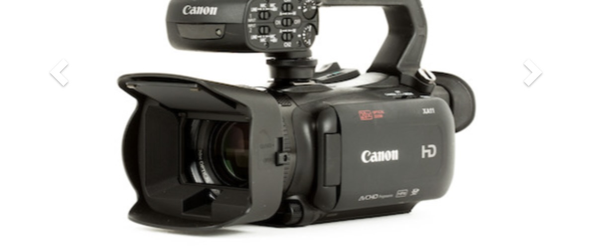

Sets/Lighting
A great low-budget short film creator has to do the best with the limited spaces they have access to. A bedroom may have to suffice for an office space, and a home dining room may have to become a café. This is a difficult process, but it can be done with a little extra effort. Little details do a lot, and lighting is your best friend. My lighting setups have been small but dependable. I always use two LED lights on tripods and a handheld ring light. Standing LEDs prodive ambiance, and some even have moving elements that can be used for campfires or torches. In a dark space, the handheld ring light can be used as an excellent spotlight as the camera and light follow the subjects. Combined, the colors and effects that you can do with these three lights can be both magical and inexpensive.
Cameras and Microphones
It has never for a creator to get their hands on a high-quality camera and microphone. In fact, you probably have one in your pocket right now! Modern phone cameras have become a perfectly adequate substitute for more expensive cameras. Several famous music videos have been filmed on phones. Set your phone's camera settings to 4K, crank it to its maximum framerate, and you'll be shocked at the quality. I have even gotten great video and audio on an iPad Mini. Any of these options available to you should be used! You do not have to spend hundreds of dollars on a professional camera just yet as you are beginning your filmmaking journey. However, if you are ready to take it to the next level without it making a hole in your wallet, I highly recommend renting cameras. An amazing website for this is Lensrentals.com. They have lenses and photo camera, but they also have amazing camcorders with prices as low as $80 for a week's rental. This is one of the cheapest ways to get a proffessional-grade camera for your project, but it will require you to condense your filming time to your rental period. If you do rent, you will also want a better microphone. These camcorders often have a holder for a shotgun mic. These range in price, but they are a worthwhile investment if you plan to use a professional camera.
Editing
Editing is a difficult and long process with. amillion software options for you to choose from. However, I highly recommend Cap Cut for laptop or desktop. This software does also have a mobile options if you need it, and all are 100% free. They do have a pro subscription option, but, unlike many other programs, you can make a fantastic edit with the free option, and I have made countless projects on this app without paying a cent. There are also infinite tutorials on how to accomplish difficult edits with the free version.